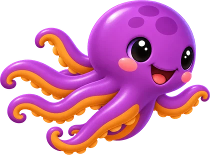
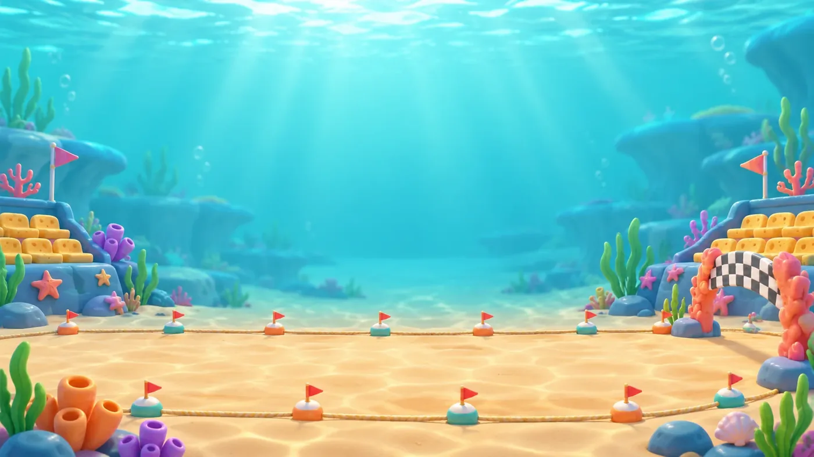
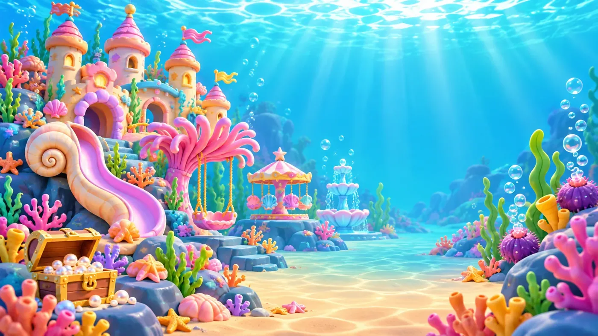
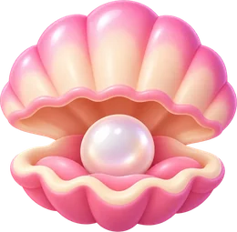

Thirty sums, one race, and a sticker at the end.
8ctoMath is mental arithmetic for children, set on the seabed. The sums a child keeps getting wrong come back more often, and the level follows the child on its own — so it stays just hard enough.

How a quiz goes
Thirty questions, one track along the seabed. Every right answer moves 8cto a step — and Brainy the squid is swimming the same track.
A sum comes up
From the operations you chose, at the level this child is on.
Pick the answer
Four to choose from. The wrong ones are the mistakes children actually make, not random numbers.
8cto swims on
Right, and he takes a step. Wrong, and the answer is shown before the next sum.
Brainy is racing
He is paced a tenth slower than this child's own usual time — so beating him means a better run than usual.

8cto
Takes a step for every right answer.

Brainy
Swims at a steady pace, set by this child's own last few quizzes.

Five kinds of sums
Pick any of them for a quiz — one, or all five. Each keeps its own level, so a child can be far along in adding and just starting on sharing.
Adding
up to 10, 20, 100 …
Taking away
never below zero
Times tables
tables to 10
Sharing
always exact
Big times
up to 100 × 10
The level finds the child
Nobody has to guess which level is right. Two things move on their own, quietly, while the child just plays.
Sums you get wrong come back
Every number carries a weight. Answer it right and the weight drops to four fifths; get it wrong and it rises to five quarters. So 7 × 8 turns up again next quiz, and the ones already known step politely aside.
The level moves itself
8ctoMath watches the last five answers of each operation. Five out of five and the level goes up; four or fewer and it eases back down. A parent can still set it by hand.

Worth swimming for
Three rewards, each meaning something different. None of them can be bought.

Eight starfish
One lights for every mark you pass — half right, then 60, 70, 80, 85, 90, 95, and all thirty.

Clams
One for a quiz with no mistakes, one for beating Brainy. Parents trade them in for whatever you agreed on at home.

A sticker
Only for a flawless quiz — every one of the thirty right. One sticker in twenty is a rare one.
Two hundred stickers, eight pages
Stickers are the collection. Drag one onto a page, turn it, flip it, make it bigger — the page belongs to the child, and it stays as they left it.


Five families
Fish · flippers & feathers · claws, shells & stars · squishy & glowing · treasures & things. Thirty-six in each.
Twenty rares
A golden turtle, a baby kraken, a rainbow whale. One earned sticker in twenty comes from this set.
Doubles are fine
Find a sticker twice and you can stick it twice. The collection screen counts your copies.


Four of the eight. The others are a kelp forest, the deep sea, a lagoon and the open sea.
For parents
Everything grown-up sits behind a small gate: a number written out in words, to be typed in digits. Easy for you, dull for a six-year-old.
Up to ten children
One device, one family. Each child has their own levels, clams and sticker book.
What happened this week
Questions answered and mistakes made over the last seven days, per child. Numbers, not badges.
Levels by hand
They move themselves, but if one is plainly too easy or too hard you can set it yourself.
Trade in a clam
Take a clam off the pile when you hand over whatever it was worth at home.
Calm motion
Fewer animations, for children who find movement distracting. Sound and music switch off separately.
English or Deutsch
Follows the device, or pick one. The whole app, either language.
Nothing leaves the device
8ctoMath is for children, so it collects nothing. It is a whole game with the aeroplane mode switch on.
- ✓No advertising, and nothing to buy inside the app.
- ✓No analytics, no tracking, no advertising identifier.
- ✓Each child is one small file on the device. First name only — no birthday, no email, no photo.
- ✓Backup to an account is optional, and stays off unless you turn it on.
- ✓Deleting a child deletes their progress, clams and stickers everywhere.
The full detail is in the privacy policy, and how to have data removed is in the data deletion policy.

Come and do some sums.
8ctoMath is finishing up for Android. Write if you would like to know when it lands.